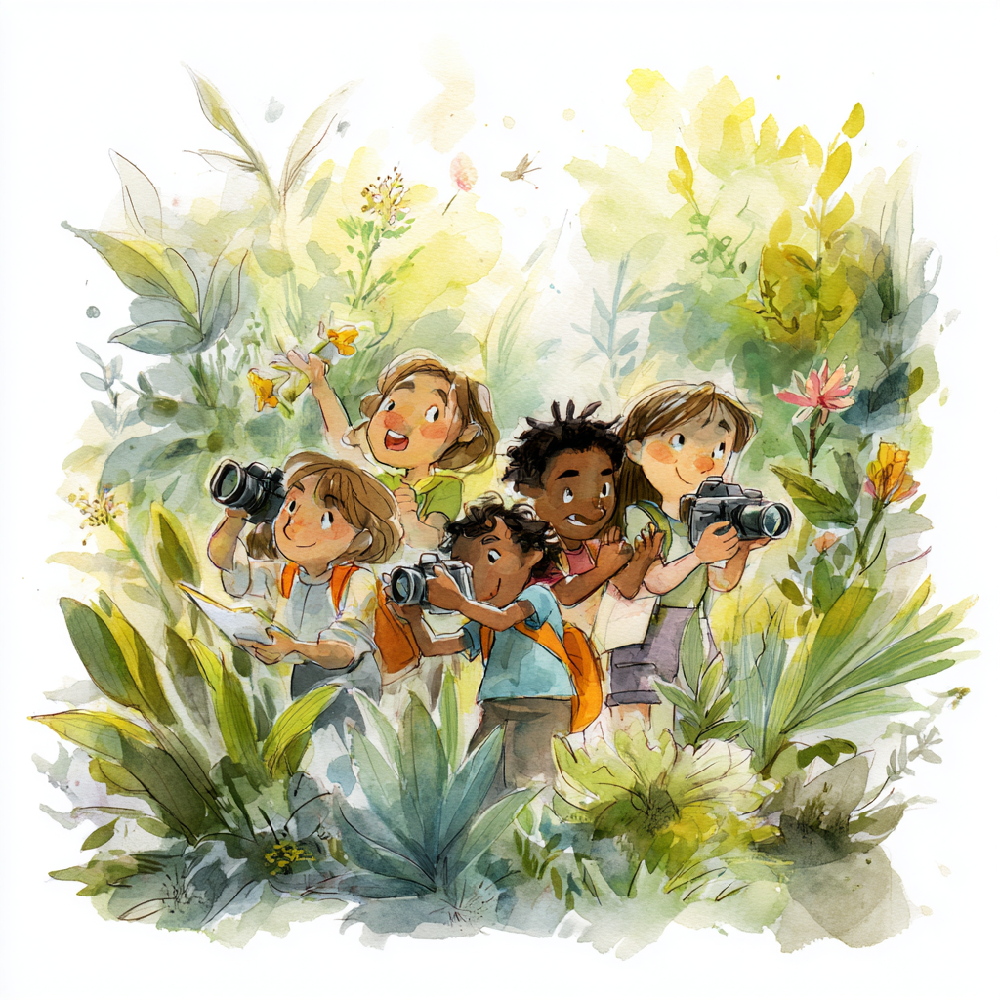

The Amazing Discovery of Nature's Seasonal Calendar
Chapter 1: Meet the Plant Detectives

Once upon a time, there was a team of super-smart scientists who noticed something puzzling about the plants around them. Dr. Drew Terasaki Hart and his friends were like nature detectives, and they had discovered the biggest mystery ever: plants all around the world seemed to be following different schedules, almost like they each had their own personal calendars!
Imagine if some kids in your neighborhood started summer vacation in December, while others started in June, and still others took their vacation in March. That would be pretty confusing, right? Well, that's exactly what these scientists noticed happening with plants all over Earth[1].
Chapter 2: The Secret Language of Seasons
Every plant on Earth has a special ability - they can "talk" to the seasons! But instead of using words, they use something much cooler. Plants change color throughout the year, and these color changes are like their way of saying "I'm awake!" or "I'm taking a nap!" or "I'm making flowers!"
Scientists call this special plant language "phenology" (pronounced "fee-NOL-oh-jee"). It's like nature's own text messaging system, where plants send signals about what they're doing and when they're doing it[2][3].
Think of it this way: If you could look down at your neighborhood from a helicopter throughout the whole year, you'd see the trees change from brown (sleeping) to bright green (growing) to colorful (making seeds) and back to brown again. Each plant is like a pixel in a giant, living painting that changes throughout the year!
Chapter 3: The Space Telescope Becomes a Time Machine

Our plant detectives had an amazing tool - satellites in space that could take pictures of the entire Earth every few days! For 20 whole years (that's twice as long as you've been alive!), these space cameras watched every single spot on our planet, taking over 1,800 pictures of each place[1].
But these weren't ordinary cameras. They could see a special type of light called "near-infrared" that plants reflect when they're actively making food from sunlight. It's like having X-ray vision that can see how busy and healthy plants are from hundreds of miles up in space!
The scientists collected so much information that if you printed it all out, the stack of papers would be taller than the Empire State Building!
Chapter 4: The Great Plant Calendar Mystery

When the scientists looked at all their space pictures, they discovered something absolutely mind-blowing. Instead of all plants following the same seasonal schedule, Earth was like a giant patchwork quilt of different plant calendars!
The Upside-Down Neighbors
In some places, plants living right next to each other followed completely opposite schedules! In California, some plants wake up and start growing in winter when it's cool and rainy, while their desert neighbors just a few miles away wait until summer to really get going[1]. It's like having best friends who eat breakfast at completely different times even though they live on the same street!
The Long-Distance Twins
Even more amazing, the scientists discovered that plants living on completely different continents sometimes followed almost exactly the same schedule! Plants in California might wake up at the same time as plants in Chile (which is on the other side of the world), because they both experience similar weather patterns[2]. It's like finding out that kids in Japan and kids in Brazil both brush their teeth at exactly the same time every day, even though they've never met!
The Tropical Time Zone Chaos
In tropical places near the equator where it's always warm, something super wild happens. Instead of having one main growing season like plants in colder places, tropical plants can have completely different schedules even when they live really close to each other.
Picture this: You and your best friend live just down the street from each other, but you eat lunch at noon while they eat lunch at 6 PM. That would be pretty weird, right? Well, that's exactly what happens with plants in tropical mountains and forests!
Chapter 5: The Coffee Bean Adventure
The scientists made an incredible discovery about coffee plants in Colombia that shows just how crazy these plant calendars can be. Colombia is famous for having two completely different coffee harvest seasons - some farmers pick their coffee beans in December, while others pick theirs in June. That's like having Christmas in winter AND summer in the same country![1]
The scientists found that this happens because plants on one side of a mountain range follow a completely different seasonal schedule than plants on the other side, even though they might be only 60 kilometers apart (that's like driving for about 45 minutes). The mountains block different weather patterns, creating totally different plant calendars on each side!
This discovery helps explain why Colombian coffee is so special - the country can harvest fresh coffee beans twice a year instead of just once like most other places in the world.
Chapter 6: The Animal Connection Game
But wait - the story gets even more interesting! When plants change their schedules, it creates a giant ripple effect that touches every living thing on Earth.
Think about it like this: If your school cafeteria suddenly started serving lunch at 3 PM instead of noon, you'd be pretty hungry and confused! The same thing happens to animals when their plant food sources change their schedules[2][3].
The scientists discovered that in some tropical mountains, this timing chaos might actually help create more different types of animals and plants. When plant schedules get mixed up, it can separate animal populations and help them evolve into new species over very long periods of time. It's like nature's way of creating biodiversity!
Chapter 7: The Climate Change Detective Work
This research is super important for understanding climate change too. By knowing how plants normally time their activities, scientists can better detect when global warming is messing up these natural schedules[2].
It's like having a baseline to know when something unusual is happening. If plants that normally wake up in March suddenly start waking up in January, scientists know that's a sign of climate change affecting that area.
The scientists found that some places on Earth are much more sensitive to these timing changes than others. Tropical mountains and Mediterranean climate areas (like California and parts of Australia) seem to be the most vulnerable to having their plant calendars disrupted.
Chapter 8: The Technology That Made Magic Possible

The scientists used some pretty incredible technology to make these discoveries. Their satellites could measure something called "near-infrared reflectance of vegetation" - basically how much special light plants reflect when they're photosynthesizing (making food from sunlight)[1].
They also used super-powerful computers to analyze all this data. Imagine trying to solve a jigsaw puzzle with over 1 million pieces, where each piece represents a different place on Earth at a different time - that's kind of what these scientists did!
They even created special mathematical models that could predict what plants would do in different seasons, kind of like having a crystal ball for plant behavior.
Chapter 9: The Flower Detective Challenge
To test their discoveries, the scientists became flower detectives too! They looked at millions of photos that regular people had posted on a website called iNaturalist, where nature lovers share pictures of plants and animals they find[1].
The scientists studied when and where people photographed flowers blooming around the world. Amazingly, their space-based plant calendar predictions matched up with what people were seeing on the ground! Plants that their satellites said should be flowering at certain times really were flowering at those times.
This was like solving a giant global puzzle where space technology and everyday people's nature photos all told the same story.
Chapter 10: What This Means for the Future
Better Farming
Farmers can use this information to plan their crops better and make sure people around the world have enough food to eat[3].
Protecting Animals
Scientists can better protect animals by understanding when their food sources will be available and when they need to migrate.
Climate Change Preparation
Communities can prepare for how climate change might affect their local plants and ecosystems.
Medicine from Plants
Many medicines come from plants, so understanding plant timing helps scientists know when to collect plants for making medicines.
Chapter 11: Your Mission as a Nature Detective
Now that you know about nature's amazing seasonal calendars, you can become a plant detective yourself! Here's your mission:
- Start a Nature Journal: Keep track of when different plants in your area start growing new leaves, when they flower, and when they lose their leaves.
- Take Monthly Photos: Take pictures of the same tree or plant every month and see how it changes throughout the year.
- Compare with Friends: If you have friends or family in other places, compare notes about when plants do different things where they live.
- Notice the Patterns: You might start to see the amazing seasonal patterns that these scientists discovered happening right in your own backyard!
Fun Facts for Young Scientists
- Scientists used satellites to take over 1,800 pictures of each place on Earth for 20 years!
- Plants can "talk" to the seasons by changing colors - it's like nature's text messaging system
- Colombian coffee farmers can harvest twice a year because plants on different sides of mountains follow different schedules
- If you printed all the satellite data, the stack would be taller than the Empire State Building!
What You Can Do
- Start a Nature Journal: Keep track of when different plants in your area start growing new leaves, when they flower, and when they lose their leaves
- Take Monthly Photos: Take pictures of the same tree or plant every month and see how it changes throughout the year
- Compare with Friends: If you have friends or family in other places, compare notes about when plants do different things where they live
Let's See What We Discovered!
Your Score: 0/3
Question 1: What is "phenology"?
Question 2: How long did the scientists use satellites to study Earth's plants?
Question 3: What amazing discovery did scientists make about coffee plants in Colombia?
The Big Picture
This research has shown us that our planet is like a giant orchestra, with every plant playing its own instrument in a complex seasonal symphony. Some plants are like violins, playing quick, high notes in spring. Others are like bass drums, with deep, slow rhythms that last all year.
The most amazing part is that this incredible symphony has been playing for millions of years, with each ecosystem developing its own unique seasonal song. Plants have figured out how to coordinate with their local weather, soil, and animal partners in ways that are perfectly suited to their specific environments.
It's like discovering that every ecosystem on Earth is a perfectly choreographed dance, with each plant knowing exactly when to step forward and when to step back, creating beautiful, complex patterns that keep our whole planet healthy and functioning.
Scientific Debrief: Global Plant Phenology Patterns
Key Discovery
Hart, Terasaki and colleagues used 20 years of satellite data to reveal unprecedented global patterns in plant phenology - the timing of seasonal activities like leaf emergence, flowering, and senescence. Their analysis of over 1,800 observations per location worldwide identified distinct regional phenological zones that don't always match traditional climate boundaries.
Core Findings
Spatial heterogeneity in timing: Plants in adjacent regions can follow completely different seasonal schedules, even within the same climate zone
Tropical complexity: Contrary to expectations, tropical regions showed the highest phenological diversity, with neighboring ecosystems displaying asynchronous timing
Agricultural implications: The research explains phenomena like Colombia's dual coffee harvest seasons, where geographic barriers create distinct phenological zones
Significance
This work provides the first comprehensive global map of plant seasonal timing, revealing that phenology is more spatially variable than previously understood. The findings have direct implications for understanding ecosystem responses to climate change, predicting agricultural productivity, and managing biodiversity conservation across different phenological zones.
Methodological Innovation
The study represents a breakthrough in remote sensing applications, demonstrating how satellite-derived vegetation indices can reveal fine-scale phenological patterns across entire continents. This approach opens new possibilities for monitoring ecosystem health and predicting climate change impacts on plant communities globally.
Learn More
- Global patterns of phenology from satellite observations | Nature Ecology & Evolution
- USGS Phenology Research
- National Ecological Observatory Network - Phenology
- NASA Earth Observatory - Seasonal Changes
- Plant Phenology for Kids | Frontiers for Young Minds
- iNaturalist - Citizen Science Platform
- Climate.gov - Phenology and Climate Change
- Project BudBurst - Citizen Science Phenology